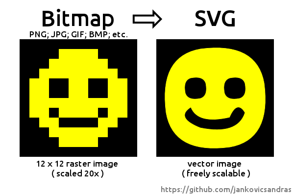
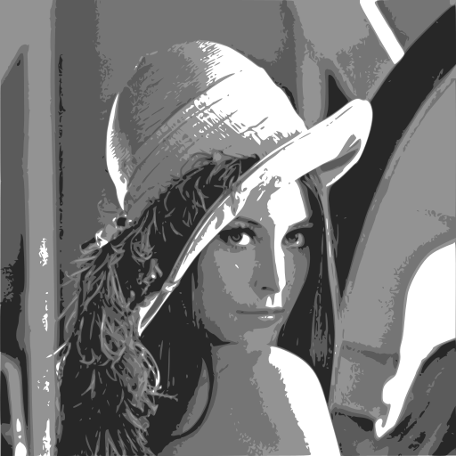
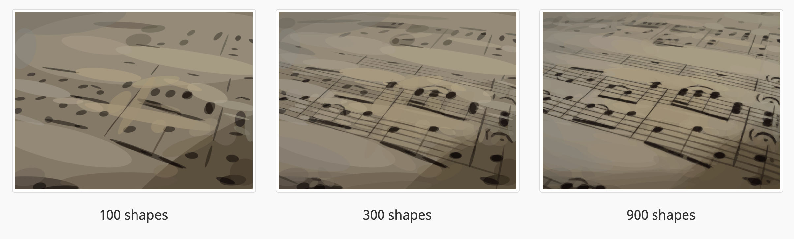
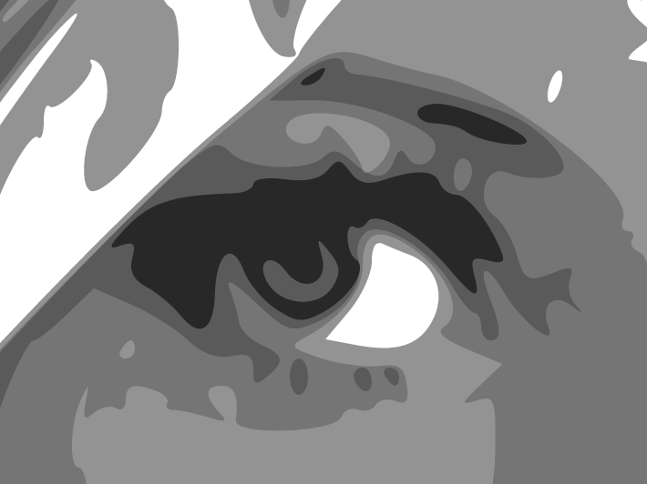
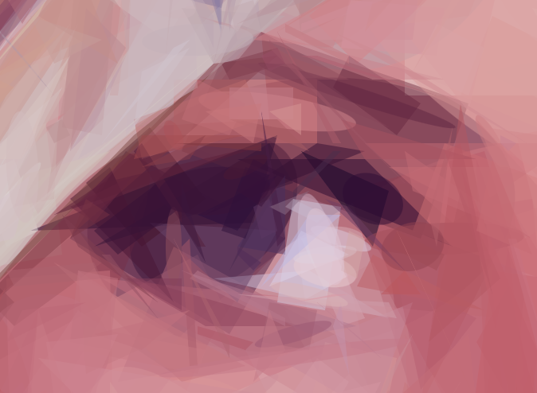

* enfocarnos en un problema complejo e interesante
* en dónde tanto artistas como ingenieros se metieron a resolver
* discutir como una solución es válida no por su "perfección" sino por cómo resuelve las necesidades del usuario
bitmap to vector graphics
"y cómo el arte le ganó a la ingeniería"
Seba Gurin
porque la rasterization es tan fácil pero verctorizar es muy complicado de resolver.
Pensarlo por un momento, en particular una foto.
* el objetivo de las soluciones ingenieriles va por tratar de discritizar "eficientemente" el bitmap
* les debo la descripción de los algoritmos ingenieriles (Image tracing)
Soluciones ingenieriles
En la vida real transformar un bitmap a vectores aplica a:
design paper-to-cad (plotters, guillotinas, etc)
geographic satellite-aerial images to maps
graphics: vectorization for easy resize, image feature, etc
OCR : handwritten text or signatures.
El objetivo es tratar más de extraer figuras a un número eficiente de primitivas. El objetivo no
es el realismo, por ejemplo pocas soluciones ingenieriles soportan colores ya que se trata más de extraer shapes
eficientemente


Vale la pena notar que si bien para fotos de facebook no hacen un gran trabajos, para digitalizar drawings,
blueprints, texto, dibujos lo hacen muy bien. por ejemplo una misma letra en un texto escaneado probablemente sea
representada por el mismo set de figuras primitivas. See diagram example
* mostrar el avance e ir explicando que hace
* mostrar arte con parametros chicos
* cuanto más error más artístico
* las mutaciones son random a propósito
El objetivo es obtener representaciones lindas, a veces incluso casi irreconocibles.
how it works: randomness, mutations,
scores, hill-climbing

Aunque no fue el objetivo original de los autores, me di cuenta que con respecto al problema de la "perfectitud" esta solución también es óptima, y mejor aún, es arbitrariamente óptima, solo hay que dejarla iterar
* explicar el problema de pablo.
* A él no le daban el svg, sino que le tenía q sacar foto a la fachada de una panadería para
extraer el logo y luego giullotinar para luego imprimir o sublimar, tazas, pegotines, remeras.
En su caso para hacer un logo negro en una remera blanca necesita recortar la figura.
* porqué la solucion artistica y perfecta no serve en el mundo real (mapas, shape detection, plotters.).
se imaginan una guillotina recortando todas las shapes de cada una? cual es mejor?
* Para lo único que podría servir es a aquellos que, por algún motivo necesiten convertir un pdf en svg con "perfeccción arbitraria".
Vida real - missleading title
Real world: imprentas, plotters, guillotinas
Cuál de las siguientes es mejor para cortar el ojo con una guillotina o plotter?


* por suerte hay muchos proyectos de investigacion y no ingenieriles
Finale
Espero que en esta charla se hayan copado con
png2svg: un problema interesante a resolver
las imagenes artisticas y el algoritmo
Cómo los problemas de ingeniería son terrenales y estamos atados a las necesidades del usuario más que a "soluciones perfectas"